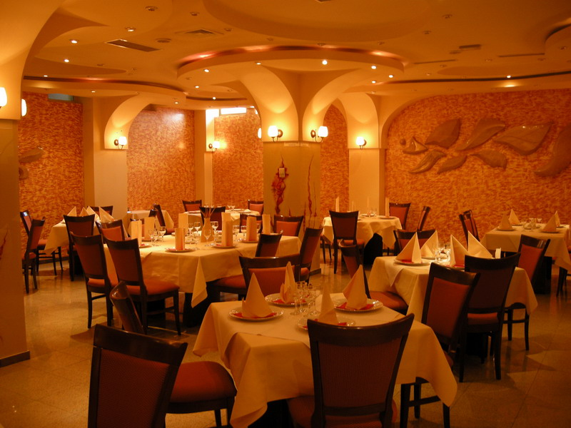
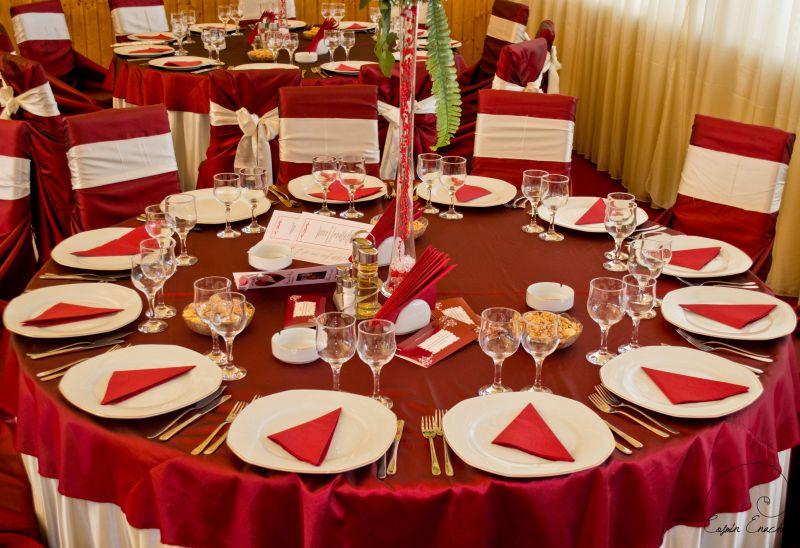
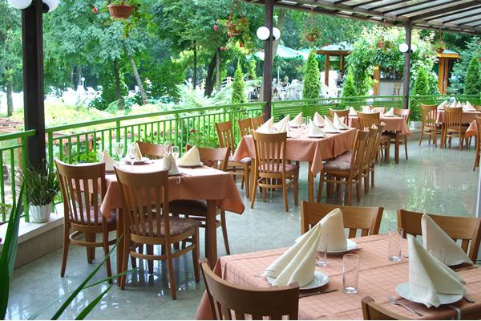

Descriere
Restaurantul Albina este locul unde rafinamentul si bunul gust
desavarsit isi dau mana pentru a da nastere unui spatiu de vis.
Preparatele necesita o pregatire elaborata, se merge numai pe
preparate "home made", inclusiv in ceea ce priveste sosurile. Se
lucreaza EXCLUSIV cu produse naturale si nu se folosesc
semipreparte sau alte produse care contin E-uri si conservanti.
Restaurantul Albina are 2 saloane,fiecare avand o capacitate de 25
locuri .
Fiecare salon are anexa cate o terasa,acoperita si incalzita,pentru
fumatori.
Meniu
Mic Dejun
Gustare branzeturi..............10lei
Gustare traditionala..............35lei
Omleta cu branza..............6lei
Ciorbe
Ciorba de burta..............7lei
Ciorba taraneasca de vacuta..............6lei
Ciorba taraneasca de pui..............6lei
Preparate de baza
Tochitura cu mamaliga..............14lei
Snitel de pui..............10lei
Afumatura taraneasca..............15lei
Desert
Clatite cu dulceata..............5lei
Papanasi cu dulceata si smantana.......7lei
Tort de casa..............6lei
Galerie Foto


